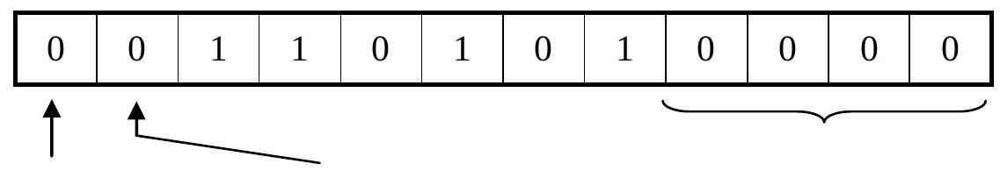
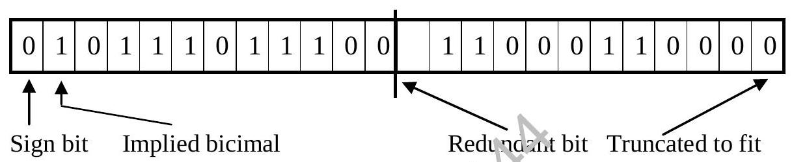
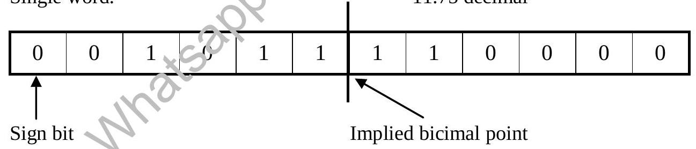
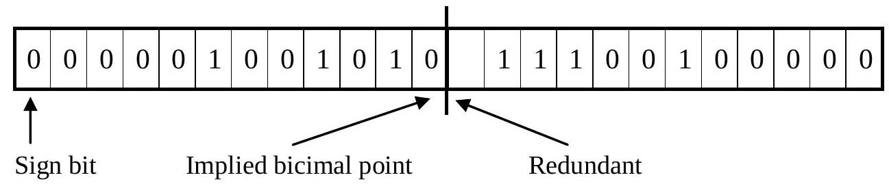
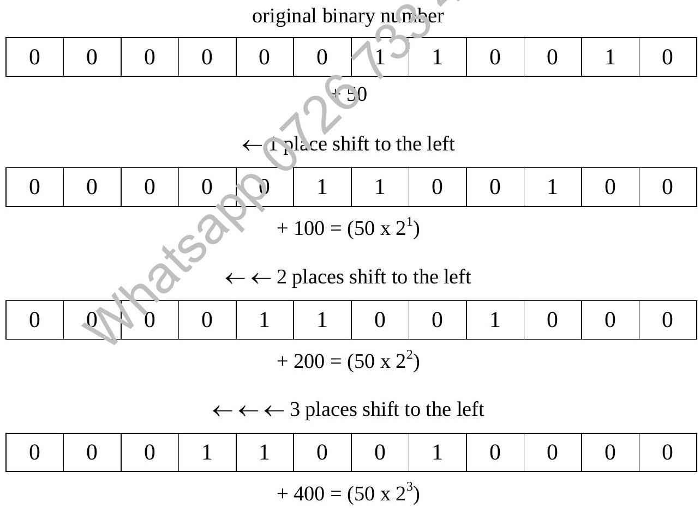

Chapter 2 : Computer Based Arithmetic (Continued)
2.7 Storage of Fractions
- First bit still sign bit
- Bicimal point not stored
- Implied after sign bit
Decimal 0.4140625
This representation is exact.
If 11 bits is not enough for exact representation:
- Truncate
- Round off
- Extend to double length (or more)
Double length fraction:
0.7328 decimal
- Double length fractions have increased accuracy, not range
2.8 Storage of Mixed Numbers (Fixed Point Notation)
Single word:
11.75 decimal
Divide as necessary
Double word: 74.890625 decimal
Usual convention is one word for integral part, the other for fraction
2.9 Storage of Number Using 2's Complement Method
Sign-modulus method is unsuitable for calculation. Computers usually use 2's complement method to store numbers and calculation.
In 2's complement method, no sign bit is reserved to indicate the sign of number.
However, if the leftmost bit is 0, it indicates a positive number. If the leftmost is a 1, then it is an implied negative number.
Stored numbers in 2's complement method can be defined in 4 stages.
Steps:
- Convert absolute value of given no. into binary.
- Store binary no. into given computer word.
- Check if given no is positive, the steps are completed.
- If given no is negative then
- Invert all bits ($0 \rightarrow 1, 1 \rightarrow 0$)
- Add 1 to the inverted no.
Example: Store 45 and -45 into 8 bit register
To store 45:
Steps:
- 45 in binary : 101101
- 45 in 8 bit: 00101101
- Since no. (45) is positive, task is completed.
To store -45:
Steps:
- 45 in binary : 101101
- 45 in 8 bits: 00101101
- -45:
- Invert: 11010010
- Add 1:
11010010\n+ 1\n----------\n 11010011
The range of number that can be stored in n-bit comp word in 2's complement format is
Example: in 8 bit word, the range is
2.10 Ten's Complement
8's complement = 2 because $8+2=10$ as such
These findings have a significant impact on the arithmetic operation in computer.
2.11 Two's Complement Subtraction
Computers can only do addition, so subtraction is done by adding the complement of the subtrahend to the minuend.
(Using four bits to store the binary number)
Example: 5 - 3
5 -> 0101
3 -> 0011
Find 2's complement of 3 (subtrahend):
Invert 0011 -> 1100
Add 1 -> + 1
----
1101 (This is -3 in 2's complement)
Add to minuend (5):
0101 (5)
+ 1101 (-3)
------
(1) 0010 (Result is 2, ignore carry)2.12 Recomplementing Cases
If the minuend is lesser than the subtrahend then it is necessary to recomplement the answer and add a minus sign to it.
Example: 3 - 5
3 -> 0011
5 -> 0101
Find 2's complement of 5 (subtrahend):
Invert 0101 -> 1010
Add 1 -> + 1
----
1011 (This is -5 in 2's complement)
Add to minuend (3):
0011 (3)
+ 1011 (-5)
------
1110 (Result is negative, indicated by leading 1)
Recomplement the result (1110) to find magnitude:
Invert 1110 -> 0001
Add 1 -> + 1
----
0010 (Magnitude is 2)
Final Answer: -2 (Add minus sign)2.13 Shift Operations
Shifting refers to a process whereby it is possible to physically move the pattern of bits within a computer word to the left or to the right. A number of different types of shift operations do exist. The most common are circular, logical and arithmetic shifts. We will only be interested in the arithmetic shift operation.
2.13.1 Shift Operations to Achieve Multiplication
If every bit in a 12-bit word is moved one place to the left it immediately has an associated place-value which is twice that previously associated with it and so the effect of shifting one place to the left is to double the value of the quantity originally stored. If shifted two places to the left, this doubling is repeated, so that the result is now four times the original; three place shifted to the left has the effect of multiplying the quantity by eight (since $8=2^3$) and so on.
Under these circumstances the gaps which occur at the right hand end of the word as the shifting takes place are filled with zeros and anything shifted beyond the left-hand end is lost. Additionally, this process is only valid so long as the sign-bit remains as zero, (although techniques do exist to cope with negative quantities). But if a positive number is to be multiplied in this way and there is possible overflow, it is possible to avoid the difficulty by going into double-length.
Example:
2.13.2 Shift Operations to Achieve Division
Just as shifting to the left effects multiplication by the relevant power of two, so shifting to the right achieves division by the relevant power of two. In this case the gaps caused by shifting occur at the left-hand end of the word and are replaced by copies of the sign-bit to retain arithmetic significance: it is in fact more straightforward to cope with negative values here than in the case of multiplication. Any bit shifted beyond the right-hand end of the word is lost and the result is a truncated form of division.
If the last bit to be shifted beyond the right-hand end of the word were to be 1, then added back on to the right-hand end bit the result would be a rounded form of the same division.
2.14 Past Years Questions
7. If a computer stores integers in one byte using the two's complement:
- What range of integers can be represented?
- Show how the computer would evaluate -100-40. You must show all working.
- Briefly comment on your results in (b).
- Determine the range of integer that could be stored in a 6 bits register in two's complement form.
- Using two's complement, evaluate the following numbers which are stored in 5 bits registers, evaluate the following:
- 12-15
- 15-10
A particular computer's 8 bit registers store number in two's complement.
- Show how -96 is represented.
- Show how 85-120 would be evaluated.
- Express 101.101 and -110.11 in binary using 8 bits for the integer part and 8 bits for the (unrounded) fraction part.
- Convert the fraction 10011100.10100110 to decimal.
Calculate the following using two's complement subtraction, assuming the numbers are stored in 8-bit registers: 13-56.
- If numbers are held in an 8 BIT register in TWO's COMPLEMENT form.
- Write down the COMPLETE range of INTEGERS which can be held.
- Show how 96-124 would be evaluated.
- If a very simple 4 BIT register were to be used.
- What would the binary representation of $0.7_{10}$ be?
- What denary value would the register actually hold?
Show, in BINARY, how a 12-BIT register would hold.
- The integer -894 using TWO's complement.
- Show how -894 would be added to ITSELF using TWO's complement and justify that the CORRECT answer is obtained.
- Show what happens if -894 is added yet again. [1]
- What is this situation called?
Using TWO's COMPLEMENT, base 10 integers are to be stored in an EIGHT bit register.
- What range of INTEGERS, (expressed in DENARY form) can be stored? [2]
- Show how $71_{10}$ is represented.
- Show how $-83_{10}$ is represented.
- Show how $71_{10}-83_{10}$ would be evaluated.
- If a computer stores integers in two bytes using TWO's complement:
- What is the range of integers which can be represented?
- How would the computer evaluate 47-125? Show all your working. [4]
- Given 1001001101 in a 12-bit word, interpret this in denary if it is of format:
- TWO's complement.
- Fixed point number with 6 decimal places.